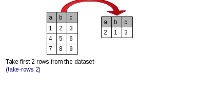

<div layout="column">
    <div>
        <md-button aria-label="Show/hide documentation" ng-click="switchShowUsage()"><i class="fa fa-angle-down"  >Show/hide documentation</i></md-button>
            <div ng-show = "showUsage">
            <p class="api-doc-docstring"> Takes only the first n rows from the dataset, discarding the rest. </p>
            </img>
            <a href="http://api.grafter.org/master/grafter.tabular.html#var-take-rows" target="_blank"> view source</a>
        </div>
        </div>
        <div>
        <h3>Parameters</h3>
  <md-input-container flex>
        <label>Number of rows</label>
        <input ng-model="function.numberOfRows" type="number" min="1" required>
    </md-input-container>
    <md-input-container flex>
        <label>Comment</label>

        <input ng-model="function.docstring" type="text" >
    </md-input-container>
</div>
</div>
